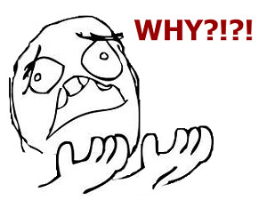

Teória 2: Algoritmus, dátové typy a premenné¶
Keďže sa na tomto predmete budeme oháňať pojmom algoritmus, dnes si ho zadefinujeme. Povenujeme sa tiež dátovým typom v Jave, premenným a konštantám. Ukážeme si, ako sú tieto veci reprezentované v pamäti počítača. Je to nutné pre správne pochopenie správania týchto konceptov.
Algoritmus¶
Algoritmus je postupnosť presne definovaných krokov, ktoré musíme realizovať, aby sme vyriešili úlohu a dosiahli výsledok.
Inými slovami, je to taký návod alebo recept, podľa ktorého vieme postupovať, aby sme zadaný problém vyriešili. Algoritmus napísaný v programovacom jazyku sa volá program.
Nie každá postupnosť krokov je algoritmus. Musí mať aj určité vlastnosti. Známy teoretický informatik Donald Knuth definuje tieto vlastnosti, ktoré algoritmus musí spĺňať:
- Konečnosť: Algoritmus musí skončiť po konečnom počte krokov
- Determinovanosť: Každý krok musí byť jednoznačne definovaný, vždy vieme aká činnosť má nasledovať
- Vstup: Pracuje so vstupnými hodnotami, ktoré sú mu odovzdané pred začatím jeho vykonávania
- Výstup alebo Rezultatívnosť: Algoritmus musí riešiť zadaný problém a dať výsledok
- Efektívnosť: Má sa uskutočniť v čo najkratšom čase a s využitím čo najmenšieho množstva prostriedkov
Dáta v počítačí¶
Ako si predstaviť pamäť počítača?¶
Predstavte si školskú šatňu. Nie hocijakú, ale takú, v ktorej sú skrinky v jednom rade za sebou, a je ich strašne veľa. Každá skrinka je rovnako veľká a má svoje poradové číslo. Ak si potrebujem odložiť nejakú vec, nájdem voľnú skrinku a svoju vec dám do nej. Ak je vec veľmi veľká, rozdelím ju na menšie časti a dám do viacerých skriniek za sebou.
Takto nejako vyzerá aj pamäť počítača. Veľkosť skrinky je jeden bajt a poradové číslo skrinky sa volá adresa.
{kind=link}
Pamäť počítača ako očíslované skrinky v šatni
Dáta v Jave¶
V jazyku Java delíme dátove typy na dve veľké skupiny: Primitívne dátové typy a neprimitívne dátové typy
Primitívne dátové typy¶
| Kategória | Typ | Veľkosť | Rozsah hodnôt |
|---|---|---|---|
| Celé číslo | byte |
8 bitov (1 bajt) | -128 až 127 |
| Celé číslo | short |
16 bitov (2 bajty) | -32768 až 32767 |
| Celé číslo | int |
32 bitov (4 bajty) | -2147483648 až 2147483647 |
| Celé číslo | long |
64 bitov (8 bajtov) | -9223372036854775808 až 9223372036854775807 |
| Číslo s pohyblivou rádovou čiarkou | float |
32 bitov (4 bajty) | nižšia presnosť |
| Číslo s pohyblivou rádovou čiarkou | double |
64 bitov (8 bajtov) | vyššia presnosť |
| Znak | char |
16 bitov (2 bajty) | 65536 rôznych znakov |
| Logická hodnota | boolean |
8 bitov (1 bajt) | true alebo false |
Hodnoty takýchto dátových typov potom v pamäti zaberajú rôznu veľkosť.
{kind=link}
Primitívne hodnoty v pamäti počítača
Neprimitívne dátové typy¶
Primitívnych typov máme v Jave 8, všetko ostatné sú typy neprimitívne. Je ich strašne veľa a vieme si aj vytvárať vlastné.
Príklad neprimitívnych dátových typov: File, Date, Map, String, Array.
Hodnoty neprimitívnych dátových typov sú vždy objekty (čo presne je objekt si povieme nabudúce). V pamäti počítača zaberajú rôzne veľa miesta, od pár desiatok bajtov až po gigabajty.
{kind=link}
Neprimitívna hodnota v pamäti počítača. (Obrázok je zjednodušený. Dátum, teda objekt triedy Date v skutočnosti zaberá 32 bajtov.)
Učím sa s pomocou umelej inteligencie
Som študent strednej školy, učím sa Javu. Prečo má Java primitívne a neprimitívne dátové typy? Nemohlo byť všetko neprimitívne?
Premenné a konštanty¶
Premenná je pomenovanie alebo názov nejakého miesta v pamäti počítača, na ktoré potom môžem ukladať údaje. Ak ostaneme pri prirovnaní so skrinkami v šatni, tak premenná je niečo také ako keď si označíte v šatni skrinku svojim menom. Nemusíte potom nikomu hovoriť, že "daj veci do skrinky č. 23", ale poviete, "daj veci do Ferovej skrinky".
{kind=link}
Primitívne premenné v pamäti počítača
Neprimitívne premenné¶
Neprimitívne premenné sú v Jave implementované veľmi špeciálne. Neprimitívna hodnota - objekt - sa neukladá priamo do premennej, ale objekt je v pamäti uložený samostatne a premenná v sebe obsahuje iba odkaz na túto hodnotu. Takýto odkaz nazývame referencia.
V nasledujúcom príklade v jednom kroku vytvoríme nový objekt a priradíme ho do premennej.
Vytvorili sme 2 údaje v pamäti počítača. Ako prvé sme vytvorili objekt (pomocou operátora new) a ten sme potom počas inicializácie priradili novo vytvorenej premennej dnes. Hodnota neprimitívnej premennej - referencia - obvykle zaberá v Jave 32 bitov (4 bajty).
{kind=link}
Neprimitívna premenná v pamäti počítača
Ak potom vytvoríme inú premennú a priradíme do nej ten istý objekt, tento objekt v pamäti nebude dvakrát, ale iba raz. Obidve premenné budú teda odkazovať na ten istý objekt. (To by sa nám pri primitívnych dátových typoch nestalo, tam by sa skopírovala hodnota a bola by v pamäti v každej premennej zvlášť.)
{kind=link}
Viac premenných ukazuje na jeden objekt

Načo je to dobré vedieť? Nie je jedno, ako to v počítači funguje? Pochopenie, ako fungujú neprimitívne premenné - referencie - je potrebné pre to, aby sme pochopili správanie programu. Keďže obidve premenné v predchádzajúcom príklade ukazujú na ten istý objekt, ak sa tento objekt zmení, zmenu bude vidieť vo všetkých premenných, ktoré sa na tento objekt odkazujú!
Ako je to v jazyku Python?
V jazyku Python neexistujú primitívne dátové typy. Všetky premenné sú implementované podobne ako neprimitívne premenné v Jave. V Pythone je každá hodnota objekt a premenná obsahuje vždy referenciu na objekt.
Konštanty¶
Neprimitívne konštanty sa opäť správajú špeciálne. Nakoľko ich hodnoty sú referencie (odkazy), takáto konštanta sa nebude môcť meniť v zmysle, že už nebude môcť ukazovať na iný objekt. Samotný objekt, ak je meniteľný, sa však meniť môže. A to aj v prípade, ak sa na neho ukazuje pomocou konštanty.
Preto majú neprimitívne konštanty využitie hlavne v prípadoch, kedy aj samotný objekt je od začiatku nemenný. Príkladom takého typu objektov je reťazec znakov String, ktorého hodnota sa po vytvorení nedá viac meniť (po anglicky je tzv. immutable)
Učím sa s pomocou umelej inteligencie
Som študent strednej školy, učím sa Javu. Napíš 3 nie zložité príklady na:
Zhrnutie teórie¶
- Algoritmus je postupnosť presne definovaných krokov, ktoré musíme realizovať, aby sme vyriešili úlohu a dosiahli výsledok. Musí mať aj určité vlastnosti:
- Konečnosť: Algoritmus musí skončiť po konečnom počte krokov
- Determinovanosť: Každý krok musí byť jednoznačne definovaný, vždy vieme aká činnosť má nasledovať
- Vstup: Pracuje so vstupnými hodnotami, ktoré sú mu odovzdané pred začatím jeho vykonávania
- Výstup alebo Rezultatívnosť: Algoritmus musí riešiť zadaný problém a dať výsledok
- Efektívnosť: Má sa uskutočniť v čo najkratšom čase a s využitím čo najmenšieho množstva prostriedkov
- Dáta v počítačí
- Počítačová pamäť uchováva dáta vo forme sekvencie bajtov
- Pamäť počítača je ako očíslované skrinky v šatni - každý bajt má svoju adresu
- Bajt je jednotka informácie, môže nadobúdať 28 = 256 rôznych hodnôt
- Bit je binárna hodnota, ktorá môže mať iba 2 stavy
- Primitívne dátové typy
- Java má 8 primitívnych dátových typov
- logický typ:
boolean - celé čísla:
byte,short,int,long - čísla s pohyblivou rádovou čiarkou:
floatadouble - znaky:
char
- Neprimitívne dátové typy
- Je ich strašne veľa a vieme si aj vytvárať vlastné.
- Hodnoty neprimitívnych dátových typov sú vždy objekty
- Príklad neprimitívnych dátových typov:
File,Date,Map,String,Array
- Premenné
- Premenná je pomenovanie alebo názov nejakého miesta v pamäti počítača, na ktoré potom môžem ukladať údaje
- Premenná má typ, názov a hodnotu
- Hodnotu vkladáme pomocou operátora priradenia
= - Neprimitívna premenná neukladá hodnotu priamo, ale v sebe obsahuje iba odkaz na túto hodnotu
- Neprimitívna premenná obsahuje referenciu na objekt
- Viacero premenných môže ukazovať na ten istý objekt
- Konštanty
- Konštanty v Jave sú ako premenné, ale s tým rozdielom, že im hodnotu môžeme priradiť iba raz a potom sa už viac nesmú meniť.
- Konštantu zadeklarujeme pomocou slovíčka final, ktoré dáme na začiatok deklarácie
- Neprimitívna konštanta sa nebude môcť meniť v zmysle, že už nebude môcť ukazovať na iný objekt. Samotný objekt, ak je meniteľný, sa však meniť môže
Poznámky do zošita
V zošite je potrebné mať napísané aspoň tieto poznámky:
ALGORITMUS
Postupnosť presne definovaných krokov na dosiahnutie výsledku.
Algoritmus musí mať tieto vlastnosti:
- Konečnosť
- Determinovanosť
- Vstup
- Výstup
- Efektívnosť
DÁTOVÉ TYPY V JAVE
Java má 8 primitívnych dátových typov
- boolean
- byte, short, int, long
- float a double
- char
Neprimitívne dátové typy
- Vieme si vytvárať vlastné
- Ich hodnoty sú objekty
- Príklad: File, Date, Map, String, Array
PREMENNÉ
Premenná je pomenovanie alebo názov nejakého miesta
v pamäti počítača, na ktoré potom môžem ukladať údaje
Vlastnosti:
- Premenná má typ, názov a hodnotu
- Príklad: int teplota = -37;
- Neprimitívna premenná obsahuje referenciu na objekt
- Viacero premenných môže ukazovať na ten istý objekt
Konštanty:
- Sú ako premenné, ale nemôžu meniť svoju hodnotu
- Deklarujeme ich pomocou slovíčka final
- Ak chceme neprimitívnu konštantu, objekt musí byť nemenný
- Príklad: final double PI = 3.1415;
Skúšanie a kontrola vedomostí
Na ďalšej hodine budeme kontrolovať nasledovné veci:
- Zapísané poznámky z hodiny vo vašom zošite
Ústne skúšanie alebo krátka 5-minútovka:
- Čo je algoritmus? Aké vlastnosti musí spĺňať?
- Ako delíme dátové typy v Jave?
- Aká primitívne dátové typy poznáte?
- Čo sú neprimitívne dátové typy? Uveďte príklady.
- Čo je premenná, ako sa deklaruje a ako sa jej priradzuje hodnota?
- Čo je neprimitívna premenná a ako sa správa?
- Čo je konštanta a ako funguje?